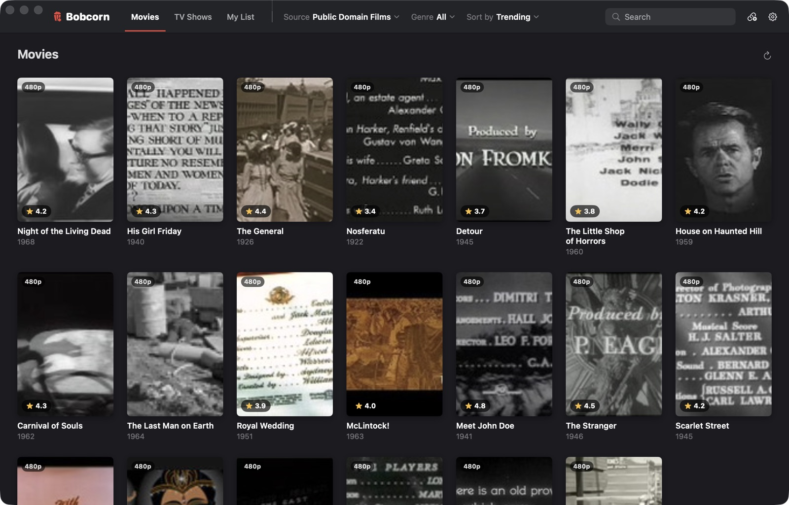
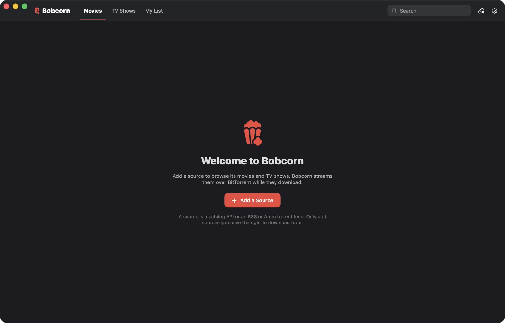
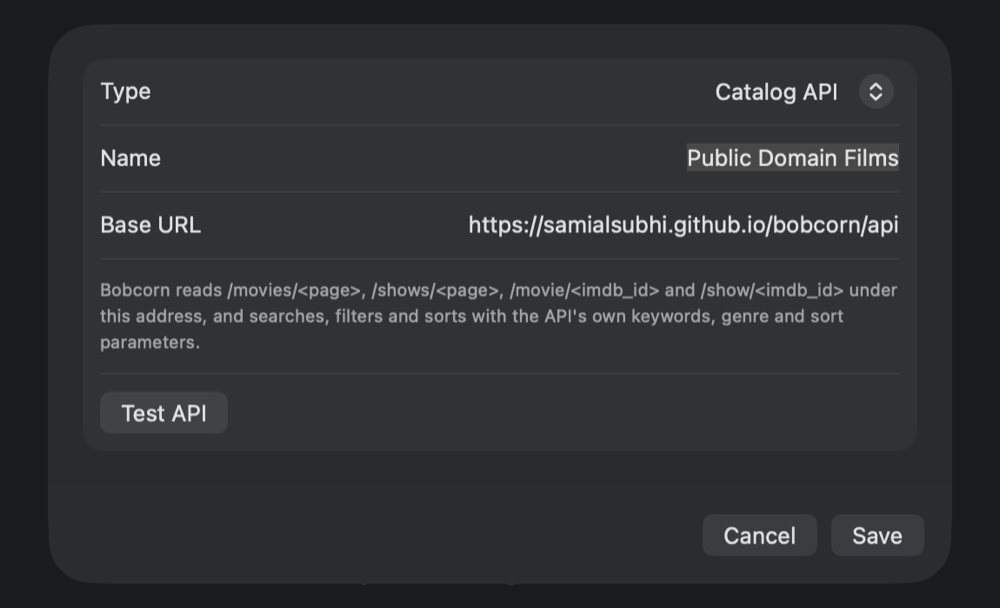
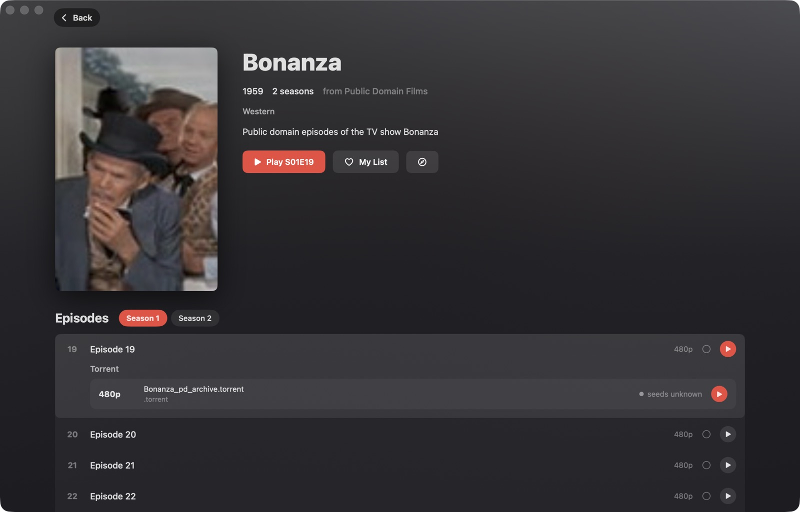
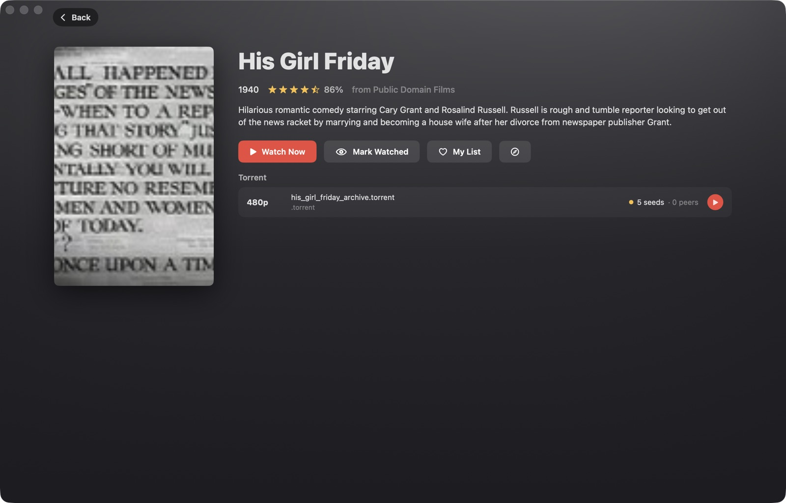
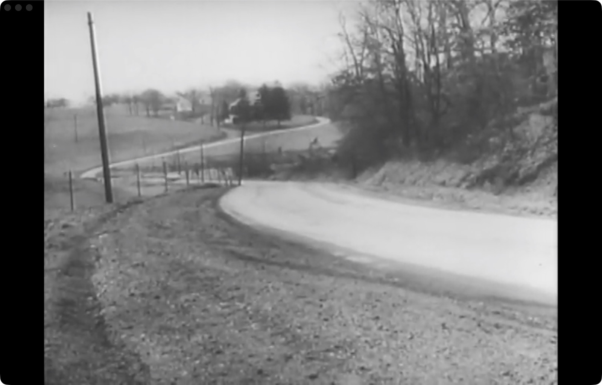

Press play.
It streams.
Bobcorn is a Mac app for the movies and TV shows of the sources you add. It streams them over BitTorrent while they download, so playback starts in seconds.

Features
Everything a movie night needs
A poster grid, a detail page, a player. The streaming engine underneath is written from scratch for the Mac.
Your sources
Add a catalog API or an RSS feed. Its movies and shows fill the Movies and TV Shows tabs, with genres, sorting and search.
Streams as it downloads
Pieces arrive in the order you watch them. Seek anywhere and Bobcorn fetches that part first.
MKV, natively
Matroska files are repackaged on the fly, never re-encoded, so H.264, HEVC and AV1 play in the Mac's own player.
Chromecast
Send what's playing to a Chromecast or Google TV. Stop casting and it carries on here, where the TV left off.
Ratings at a glance
Every poster shows its star rating, and with a free OMDb key, its Tomatometer score.
My List
Heart what you want to watch. Continue Watching picks shows up at the next episode.
Subtitles and full screen
Picture in picture, AirPlay, .srt and .vtt subtitles, and the next episode starts by itself.
Keeps itself current
When there's a new version, an Update button appears. One click installs it, signed and checked.
Getting started
Add a source
Bobcorn comes with no catalog of its own. Point it at a source and its movies and shows appear. To try it, use the example below: films and TV that are in the public domain, from the Internet Archive.
Open Bobcorn
The first time, it asks for a source. Click Add a Source. Later, more go in Settings → Sources.

Paste the address
Leave the type on Catalog API, give it a name, and paste this as the base URL:
https://samialsubhi.github.io/bobcorn/apiClick Test API to check it answers, then Save.

Pick something and press play
The Movies and TV Shows tabs fill with the source's titles. Open one to see its torrents, most seeds first, or its seasons and episodes.
These films stream from the Internet Archive's own servers, so they play even when nobody else is sharing them.

Or add an RSS feed
Choose RSS or Atom feed as the type to add a feed that lists torrents. The Internet Archive publishes one for its public-domain films:
https://archive.org/services/collection-rss.php?collection=feature_filmsA feed's films go under Movies and its episodes under TV Shows. Only add sources you have the right to download from.
For source makers
Make your own catalog API
A catalog API is four JSON endpoints under one address. The example is plain files on GitHub Pages, made by this script.
| Endpoint | Answers with |
|---|---|
/movies/<page> | An array of movies, up to 50 per page, from page 1. An empty array or a 404 ends the list. |
/shows/<page> | An array of shows, the same way. |
/movie/<imdb_id> | One movie with all its details and torrents. |
/show/<imdb_id> | One show with an episodes array, each with its own torrents. |
Lists get sort (trending, views, rating, year, name), order (1 or -1), genre and keywords as query parameters. A source can ignore them, as the example does.
{
"imdb_id": "tt0032599",
"title": "His Girl Friday",
"year": "1940",
"synopsis": "…",
"runtime": "92",
"rating": { "percentage": 86, "votes": 120 },
"images": { "poster": "https://…", "fanart": "https://…" },
"genres": ["comedy"],
"torrents": {
"en": {
"1080p": { "url": "magnet:?xt=…", "seed": 350, "peer": 80,
"size": 2147483648 }
}
}
}
{
"imdb_id": "tt0052451",
"title": "Bonanza",
"num_seasons": 2,
"episodes": [
{
"season": 1, "episode": 19,
"title": "…", "overview": "…",
"first_aired": 1263945600,
"torrents": {
"720p": { "url": "magnet:?xt=…", "seeds": 30, "peers": 4 }
}
}
]
}
A torrent's url can be a magnet link or a .torrent file. Episodes in one season pack can share a torrent: Bobcorn plays the file named for each episode.
A closer look
Made for the Mac


Install
Up and running in a minute
- Download BobcornBobcorn.dmg runs on Apple silicon and Intel Macs with macOS 14 or later.
- Drag it to ApplicationsOpen the disk image and drag Bobcorn onto the Applications folder beside it.
- Open itBobcorn is signed with a Developer ID and notarized by Apple, so it opens like any other app. The first time, macOS checks you meant to open something downloaded from the internet: click Open.
- Add a sourceFollow the steps above, then press play. Updates arrive in the app.